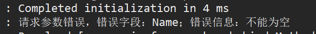

由于我现在写的项目都是前后端分离的，前端用的是vue，后端springboot，于是前后端传值的问题就是一个比较重要的问题，为此我还特意去学了一下vue的传值，其实就是用一个axios组件，其实就是基于promise对ajax的封装，用法和ajax几乎一样，有兴趣的可以学学vue；
一般而言这种前后端分离的情况，前后端数据交互用的是json传递，而在spring中已经有两个注解定义好了，可以直接使用@RequestBody和@ResponseBody；
温馨提示，以下代码默认你已经会使用swagger框架，lombok注解
1. RequestBody注解
看名字这个注解就是和请求有关的，而事实也确实如此，@RequestBody注解的作用是将前端传过来的json字符串转换成java对象，用法如下：
你们可以不用实现InitializingBean，这个接口是我测试其他东西用到的
@RestController
@Api(value="测试校验注解controller",tags="测试校验注解controller")
@Slf4j
public class TestController implements InitializingBean{
// 测试数据库数据
@PostMapping("/hello")
@ApiOperation(value = "传入对象校验", notes = "传入对象校验")
public User hello(@RequestBody @Valid User user) {
System.out.println(user);
return user;
}
}
@Data
@Accessors(chain=true)
public class User {
@NotBlank
@Size(max=3,message="名字最多只能是3位")
private String name;
@NotBlank
private String age;
}相信大家对上面代码很熟悉了，其中在方法hello方法的参数中，我们用了@RequestBody注解修饰user对象，这个时候从前端传过来的json字符串就被映射到user中，我顺便用了一下@Valid注解校验传值是否非空，我们可以用这个很简单的判断user对象有没有接收到；
打开swagger的ui界面，就是项目启动的 ip:端口/swagger-ui.html
然后点击try it out,可以看到结果：
后端也收到了数据：
到这里一切是如此美好，然后突然有的时候前端抽风或者是当你接收一些奇葩项目的时候，前端传值首字母大写，你会怎么样？有人说这很简单啊，我只需要把后端对应的User中对应的字段也改一下啊，我们看看结果：
测试结果如下，这里我有个校验的全局异常处理器做了处理；这个时候说明后端Name字段接收数据失败，这是个大坑，项目中把我坑了好半天。。

解决办法一：让前端变量命名用驼峰，即首字母小写，那么后端字段只需要跟前端一样就可以了；
解决办法二：后端在接收变量的该字段中添加注解：
测试结果：
2. ResponseBody注解
顺便讲一下这个注解，这个注解顾名思义，就是将java对象以自动转化为json字符串的形式返回给前端，我们可以在每一个方法上加一个这个注解，但是常用的做法就是在Controller上使用RestController注解，那么我们直接在方法中返回对象就好了，不用手动的转成json然后再传
其实这两个注解@RequestBody和@ResponseBody 原理上都差不多，其实很简单，用到一个转换器HttpMessageConverter ，将Http请求体中的json取到，然后用开源的Jason进行转换成java对象，后面有时间可以分析一下源码
反思
由于现在大多都是前后端分离的，虽然使得后端程序员不需要再去关注页面的逻辑了，这也极大的减轻了后端的压力，将压力前移了，但是这也造成了一些问题，就是前后端要进行频繁的联调，这也说明了接口文档的重要性，项目初期定义好接口文档真的可以省下很多功夫，避免后期频繁调整；
其实吧，有时间学一下前端的内容还是很有意思的，最近在学vue，才知道es6。。(҂ ˘ _ ˘ )，不过用es6很舒服，类似java中类的用法
还有就是字段的命名规则，求求你了，用驼峰吧！！！